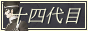
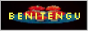
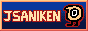
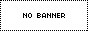

ネオ日本語ウェブリング Neo-Nihongo Webring
ようこそ！
こちらのウェブリングは様々な日本語話者や日本語学習者を繋げる、同盟のようなものです。
Welcome to the Neo-Nihongo Webring, a webring for Japanese speakers and learners of all kinds!
- 母語話者の方 / Native speakers
- 第二、第三言語の方 / Fluent speakers (L2, L3, etc.)
- 日本語を学習している方 / Learners (beginner, intermediate, etc.)
コンセプトとしてはNeocitiesサイトの交流を想定していますが、Neocities外でも個人サイトであれば参加可能です。
サイトに日本語コンテンツがあった方が嬉しいですが必須ではありません。
The main concept is to connect Neocities users, but non-Neocities sites are also welcome to join.
Having Japanese content on your website is greatly encouraged but not required.
目次 Contents
参加方法 How to Join
注意事項 Warnings
- 悪意や攻撃性のある内容のサイトはお断りします。
Sites with malicious content such as hate speech are not allowed. - BOTやスパム防止のため、白紙やテンプレートのみのようなサイトは登録しかねます。
To prevent bots and spam, I cannot let in blank or barebones sites.
登録方法は2種類ありますので、好きな方をお選びください。
There are two ways to join:
① 登録フォーム Registration Form
② Eメール Email
いずれかのテキストエリアの必要項目を記入し、cerealandchoccymilk☆icloud・com宛にお送りください。
＊マークの項目は必須項目です。項目の詳しい説明は上のフォームをご覧ください。
Fill out either one of the text boxes below and send it to cerealandchoccymilk☆icloud・com.
Questions marked with an asterisk * are required. For more info, see the question descriptions on the registration form.
件名：ネオ日本語ウェブリング
Subject: Neo-Nihongo Webring
いずれの方法でも、登録完了の際はEメールにてご連絡致します。
また、登録後にリンク切れを見つけた際には状態確認のEメールをお送りします。
Regardless of the registration method, I will send you an email once you’ve been added.
If I find a dead or malfunctioning link in the webring, I will also send an email to check in.
- 修正・退会 Updating info and leaving the webring
◆ 登録内容修正 Updating member info
登録時に使ったメールアドレスで上記のアドレスまでご連絡ください。
件名「ネオ日本語ウェブリング」で本文1行目を「修正希望」にし、修正したい項目をご記入ください。Send in an email from the address you used to register, with the subject "Neo-Nihongo Webring."
With "Update request" as the first line, proceed to fill out the part(s) you want to update.◆ 退会 Leaving the webring
登録時に使ったメールアドレスで上記のアドレスまでご連絡ください。
件名「ネオ日本語ウェブリング」で本文1行目を「退会希望」にし、もし可能であれば退会理由をご記入ください。Send in an email from the address you used to register, with the subject "Neo-Nihongo Webring."
Just the line "Deletion request" is enough, but it would be helpful if you could provide the reason.
リンク Codes
使い方 How to use
テキストエリア内のコードを任意のページにコピペし、[YOUR-SITE]部分3箇所をサイトURL（登録時に入力したもの）に置き換えてください。
Copy-paste the code in the text area onto a page of your choosing, and replace the 3 [YOUR-SITE]s with the URL you provided during registration.
管理人が手動でサイトを追加するまで"about"以外のリンクは機能しません。
It is recommended to put the code on your site after you receive the confirmation email.
The navigation links will not work until I manually add your site to the webring.
テキストver. Text-based version
画像ver. Image-based version

名簿 Member List
登録サイト数 Site count: 12
（敬称略）

cereal and choccy milk
Choccy/ちょき 母語話者 Native speaker- 日米ハーフのウェブリング創設者。英語の方では和英翻訳、コレクション、拙い文章などを晒しており、中庭（日本語）では主にカービィの二次創作を載せています。// Japanese-American owner of this webring. On the English side I post JA-EN translations, collections, and small articles. In the Courtyard (Japanese), I mostly post Kirby fanart.

森の小川でサーフィン (Surfin' in a Forest Stream)
- ちょき管理人のもう一つのサイト。「ゲゲゲの鬼太郎」の二次創作サイトで、内容は全て日本語です。// Choccy's second website, a "Gegege no Kitaro" fanart site. Contents are 100% Japanese.
- 
juuyondaime (十四代目)
学習者 Learner - 世界一遅い日本語学習者。「デビルサマナー葛葉ライドウ」にずいぶんドハマりしています。// World's slowest Japanese student. Woefully obsessed with the Devil Summoner: Raidou Kuzunoha duology.

ねおたうん
みかん 学習者 Learner- 日本の歴史的地名について探究したり、今シーズンのスワローズの弱さに舌を巻いたりしています。管理人は日本語だけはギリ使えます。拙い言葉ばかりですが、皆様と種々の感動を分かち合えたら良いなと思っています。
足許の歴史に思いを馳せたり、スワローズを応援（但し勝敗は考慮しないものとする）したりしてみませんか？
このサイトはセントラルリーグへの指名打者制導入に反対しています。

🔞 sanji.org
サンジロプス 学習者 Learner- 「sanji.org」アニメ☆音楽☆バクチク // sanji.org - anime, music and 50 year old men
- 
🔞 紅天狗 (Benitengu)
Worm 母語話者 Native speaker - 日系アメリカ人の私的サイトです。基本的に趣味（ホラー、鳥、虫、エビ飼育、SM、冷戦時代のアメリカ文化など）について書いてます。

Nova's Corner (ノヴァのコーナー)
Nova 学習者 Learner- Personal website where I post my art and talk about stuff lol
- 
JSAniken's Creative Storage (JSAniken創作倉庫)
JS 母語話者 Native speaker - 日米ハーフのアニメーターです。サイトでは主に趣味で作ったアニメや日常のブログなどを書いています。英語メインですが気分によって日本語でもブログを書くと思うのでよろしくお願いします。// I am a Japanese/American working as an animator. My blog focuses on the animations I've made in my free time, along with blogs about my daily life. It's mainly in English but I may write in Japanese too depending on my mood.

renyoi (レンよい)
ren 第二言語 Second Lang.- a personal website full of shrines, colorful design, and features basically unusable on mobile. // 興味があることが祝うページが多くて、カラフルなデザインでまったくモバイルで使えない特徴がある個人的なサイト。

CRTstatic (CRTスタティック)
Nikki/ニッキー 学習者 Learner- Nikki's space on the world wide web // ニッキーのインターネット家

canworld
bacteryy2019 母語話者 Native speaker- とある学生の拙ねえ自己満ウェブサイト。// self indulgent website of a teen

100%health
yuinoid 母語話者 Native speaker- yuinoid/いど子 の個人サイトです。イラストギャラリーや不定期更新の日記、分散SNSを中心としたインターネット史の年表を主なコンテンツとしています。// Personal site of yuinoid/いど子. Features illustration galleries, irregularly updated diary entries, and a timeline of internet history focusing on decentralized social networks.
- 
サイト名 (別名)
管理人 レベル - サイト説明
最終更新 Last checked: 2025/08/14
更新履歴 Changelog
- 2025/05/31
- ウェブリング始動、ウィジェット2種を公開 Opened webring, added 2 widgets
- 2025/05/28
- 「参加方法」追加 "How to join" added
- 2025/05/28
- ページ作成 Page created